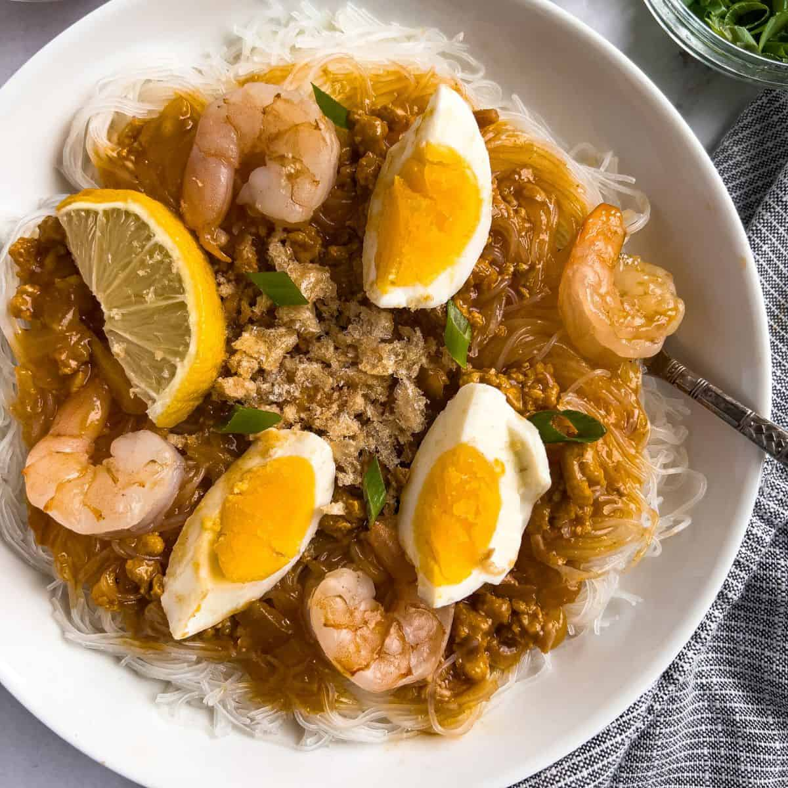

Home
Palabok

Description
Palabok is a Filipino noodle dish with shrimp sauce and usually topped with other ingredients such as hard-boiled eggs, ground meat, shrimp, chicharron, and finely chopped scallions.
Ingredients
- Pancit Bihon
- Ground Pork
- Shrimp
- Annatto Powder
- Cornstarch
- Fish Sauce
- Crushed chicharron
- Hard-boiled Eggs
- Crispy Garlic
- Chopped Scallions
- Calamansi
Steps
-
Prepare Ingredients & Toppings:
- Chop: Dice the scallions and onions. Mince the garlic.
- Boil: Boil the eggs and slice them for topping.
- Crush: Crush the chicharron into small pieces for topping.
-
Soaking or Boiling the Pancit Bihon (Rice Noodles):
- Option 1: Soak: Soak the noodles in warm water for about 15 minutes or until soft and break apart easily. Drain well.
- Option 2: Boil: Boil 5 cups of water with ¼ teaspoon of salt. Cook the noodles in the boiling water for just a few minutes until al dente. Drain and set aside (save the water for shrimp stock).
-
Cook the Shrimp (if using boiled water method):
- Boil the whole shrimp in the reserved water (with shrimp heads, skins, and tails on) until it turns opaque.
- Remove the shrimp, let cool, then peel and devein, saving the shrimp shells and heads to use as shrimp stock.
-
Make the Palabok Sauce:
- In a large skillet, sauté the diced onions and minced garlic until fragrant.
- Add the ground pork, fish sauce, and black pepper. Stir occasionally, breaking up the meat with a spatula as it cooks. Let it cook until light brown.
- Dissolve the annatto powder in the shrimp stock (from the boiled shrimp) and pour it into the skillet with the pork mixture.
- Bring the mixture to a boil, then simmer for 10 minutes. If the sauce becomes too thick, add more water, about half a cup at a time.
-
Thicken the Sauce:
- Dissolve cornstarch in ½ cup of cold water.
- Pour the cornstarch mixture into the simmering sauce while stirring continuously until the sauce thickens. Taste and adjust with additional salt and black pepper as needed.
-
Assemble the Palabok:
- Place the noodles on a serving plate.
- Pour enough of the sauce over the noodles, ensuring the noodles are well-coated.
- Top with the boiled eggs, crushed chicharron, chopped scallions, and any remaining toppings.
-
Serve and Enjoy!
- Serve the palabok warm with a side of your choice, and enjoy!